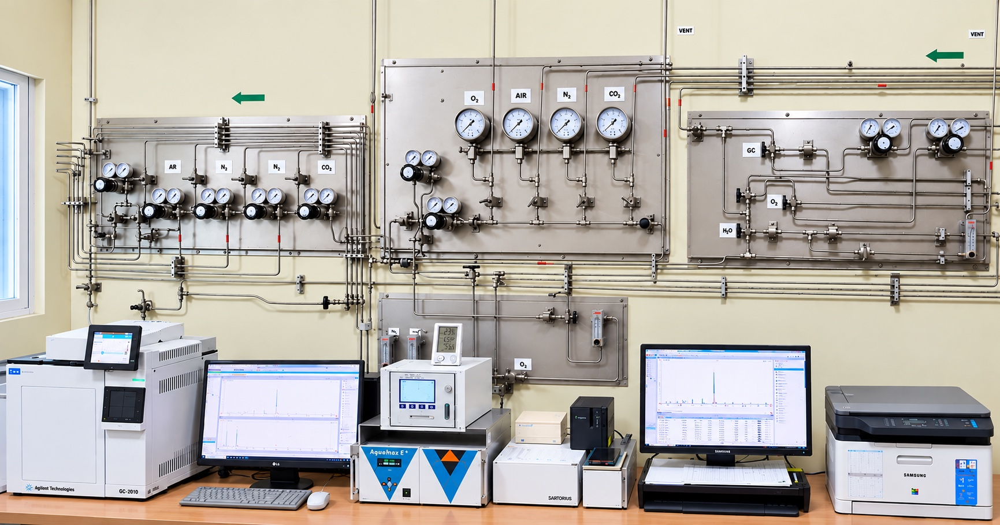
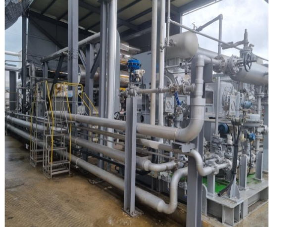
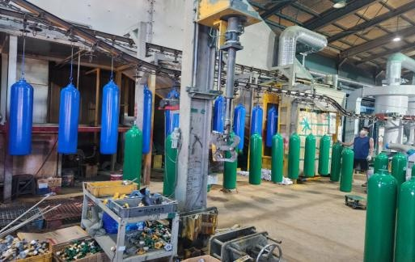
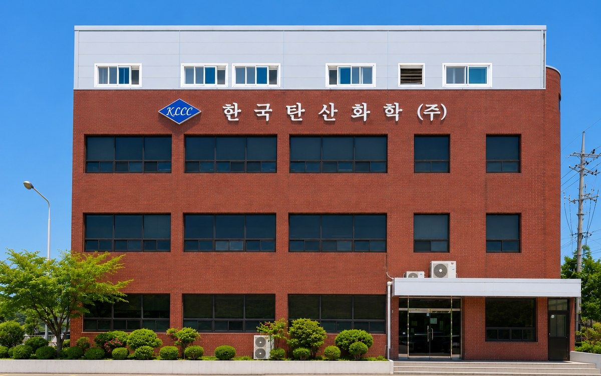

가스 분석실
정밀 분석 장비로 출하 전 품질 검증.
고순도 제조 역량과 검증된 품질로 신뢰를 더합니다.
질소·아르곤·공기 등을 99.999%·99.999% 및 99.9999%까지 정제하는 분석실과 전처리 시설을 보유합니다.

정밀 분석 장비로 출하 전 품질 검증.

전처리·진공 처리로 고순도 유지.

자체 검사장 보유로 안전성 확보.
식품의약품안전처 고시 기준에 따른 자가품질검사 결과입니다. (외부 공인기관 검증)
| 검사항목 | 기준 | 결과 |
|---|---|---|
| 함량 (%v/v) | 99.5 이상 | 99.9 |
| 일산화탄소 | 10 이하 | 0.028ppm |
| 수분 | 67ppm 이하 | 8.80ppm |
| 성상·확인시험·유리산 | 적합 | 적합 |
분자식 CO₂ · 분자량 44.01 · INS No. 290 · CAS No. 124-38-9

공장 내 상주하는 Gas Service Team(생산·품질·운송·설비)이 공급 안정성·품질·설비 안전성을 직접 책임집니다.